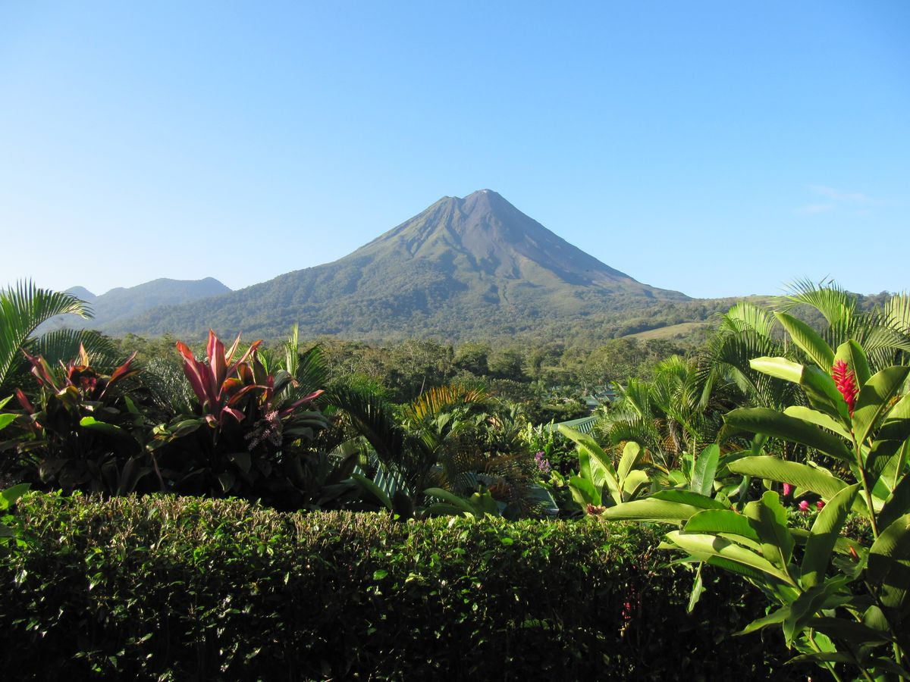

Inicio / La Fortuna

Volcán Arenal
La Fortuna
Tres días a los pies del volcán Arenal: cascada, puentes colgantes sobre el bosque nuboso y aguas termales para descansar.
22 - 25 agosto · Hotel Monte Real
Actividades
Dom 23 agosto · 08:00
Catarata La Fortuna
Descenso hasta la cascada de La Fortuna, una de las más fotografiadas de Costa Rica. Zona …
Lun 24 agosto · 08:00
Puentes Colgantes de Mistico
Recorrido guiado por el bosque nuboso a través de los puentes colgantes, con vistas al vol…
Lun 24 agosto · Tarde libre
Ecotermales
Tarde de relax en las aguas termales del volcán, con comida incluida.